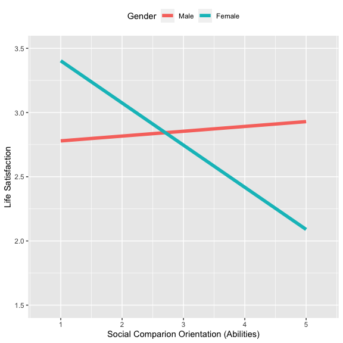
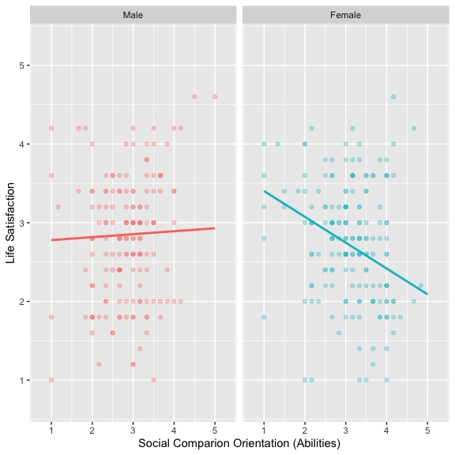
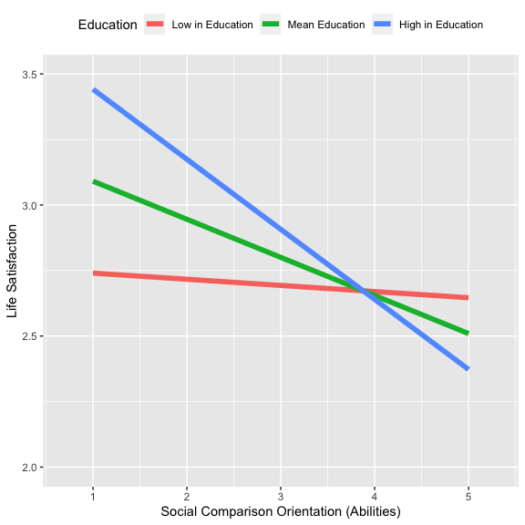

SG Covid-19 Sentiment Analysis
Capstone Project | Presentation Slides using R Markdown
Coronavirus disease(COVID19) is an infectious disease caused by a newly discovered coronavirus. It has spread to numerous countries across all continents since it was first discovery in Wuhan, China back in Nov 2019 and was declared as pandemic by WHO on March 11 2020.
Various countries has came out measure/restrictions to respond to COVID-19. Since “circuit breaker”, a partial nationwide lockdown, where only essential services were allowed to open.
Singapore(SG) residents have started to feel a great impact on daily life where they are encouraged to stay home as much as possible and wearing of mask became mandatory when going out.
SG government has constantly revising policies and social restrictions. Three phases of planned reopening were announced since 19 May namely “Safe Reopening” (Phase1) “Safer Transition” (Phase2), and finally “Safe Nation” (Phase3).
R Markdown and create presentation slides.What are the main prevalent sentiment and emotions expressed in words in Singapore tweets about current COVID situation?
Is there any change of sentiment over a period of time amidst global reopening with higher vaccination rate, in contrast to growing new daily cases/death locally?
For our data science project, we activated the following packages, using the Tidyverse approach.
# Load necessary packages
pacman::p_load(tidyverse, broom, modelr, lubridate,
tidytext, wordcloud2, wordcloud, reshape2,
textdata, huxtable, # Employing Lexicon
gridExtra, psych, sandwich,
scales, rtweet, glue, ggplot2,
cariet, DT, dplyr)
my_colors <- c("#05A4C0", "#85CEDA", "#D2A7D8", "#A67BC5", "#BB1C8B", "#8D266E", "gold4", "darkred", "deepskyblue4")
my_theme <- theme(plot.background = element_rect(fill = "grey98", color = "grey20"),
panel.background = element_rect(fill = "grey98"),
panel.grid.major = element_line(colour = "grey87"),
text = element_text(color = "grey20"),
plot.title = element_text(size = 22),
plot.subtitle = element_text(size = 17),
axis.title = element_text(size = 15),
axis.text = element_text(size = 15),
legend.box.background = element_rect(color = "grey20", fill = "grey98", size = 0.1),
legend.box.margin = margin(t = 3, r = 3, b = 3, l = 3),
legend.title = element_blank(),
legend.text = element_text(size = 15),
strip.text = element_text(size=17))Do social comparisons orientation regarding abilities (the tendency that people compare their abilities with others’) have something to do with one’s life satisfaction?
Tidyverse approach.Then, we imported our dataset.
## Rows: 331 Columns: 20## ── Column specification ────────────────────────────────────────────────────────
## Delimiter: ","
## dbl (20): SWL1, SWL2, SWL3, SWL4, SWL5, SCA1, SCA2, SCA3, SCA4, SCA5, SCA6, ...##
## ℹ Use `spec()` to retrieve the full column specification for this data.
## ℹ Specify the column types or set `show_col_types = FALSE` to quiet this message.Within the dataset, there are five questions about satisfaction with life (SWL), which will serve as our dependent (continuous y) variable.
Most people compare themselves from time to time with others. For example, they may compare the way they feel, their opinions, their abilities, and/or their situation with those of other people. Here is nothing particularly ‘good’ or ‘bad’ about this type of comparison, and some people do it more than others.
SCA, which will serve as our dependent variable (continuous x1); whereas the other five were about social comparisons regarding opinions (SCB).gender, is contained as follows: 1 being male; 2 being female.## Rows: 331
## Columns: 20
## $ SWL1 <dbl> 2, 3, 4, 3, 3, 3, 3, 2, 2, 2, 3, 3, 2, 3, 3, 4, 3, 2, 3, 2, 3,…
## $ SWL2 <dbl> 2, 3, 4, 3, 3, 2, 3, 3, 2, 2, 3, 4, 2, 4, 4, 5, 3, 3, 4, 2, 3,…
## $ SWL3 <dbl> 2, 4, 5, 3, 3, 3, 4, 3, 2, 2, 4, 4, 2, 3, 4, 4, 3, 3, 5, 2, 2,…
## $ SWL4 <dbl> 2, 3, 5, 2, 2, 2, 3, 4, 2, 2, 4, 4, 2, 4, 4, 5, 2, 2, 4, 3, 3,…
## $ SWL5 <dbl> 1, 3, 3, 2, 1, 3, 1, 2, 1, 2, 4, 2, 1, 2, 3, 3, 2, 2, 2, 1, 3,…
## $ SCA1 <dbl> 3, 3, 2, 2, 2, 3, 1, 2, 2, 4, 3, 4, 4, 4, 4, 2, 4, 4, 1, 4, 2,…
## $ SCA2 <dbl> 4, 3, 2, 2, 2, 3, 1, 3, 2, 4, 4, 4, 4, 4, 4, 4, 3, 4, 1, 4, 2,…
## $ SCA3 <dbl> 2, 3, 4, 2, 3, 3, 1, 4, 2, 4, 3, 3, 4, 4, 3, 4, 3, 4, 1, 4, 3,…
## $ SCA4 <dbl> 3, 3, 2, 2, 3, 3, 1, 3, 2, 4, 3, 4, 4, 4, 3, 3, 4, 4, 1, 4, 3,…
## $ SCA5 <dbl> 2, 3, 2, 3, 3, 3, 1, 3, 2, 4, 3, 4, 4, 4, 4, 4, 3, 3, 1, 4, 3,…
## $ SCA6 <dbl> 2, 3, 1, 3, 3, 3, 1, 2, 2, 4, 3, 3, 4, 3, 4, 4, 3, 4, 1, 4, 3,…
## $ SCB7 <dbl> 3, 3, 2, 2, 4, 3, 1, 2, 2, 4, 3, 4, 4, 5, 4, 4, 3, 4, 3, 4, 3,…
## $ SCB8 <dbl> 4, 3, 3, 2, 4, 3, 1, 2, 2, 4, 2, 4, 4, 5, 3, 5, 4, 4, 3, 4, 3,…
## $ SCB9 <dbl> 3, 3, 2, 3, 4, 3, 1, 2, 4, 4, 2, 4, 4, 3, 3, 3, 3, 4, 2, 4, 3,…
## $ SCB10 <dbl> 4, 3, 3, 3, 4, 3, 1, 3, 2, 4, 2, 4, 4, 3, 3, 5, 3, 4, 4, 4, 3,…
## $ SCB11 <dbl> 4, 3, 4, 2, 3, 3, 1, 3, 3, 2, 3, 2, 2, 3, 2, 4, 3, 4, 4, 4, 3,…
## $ gender <dbl> 2, 2, 2, 2, 1, 2, 2, 1, 1, 2, 2, 1, 2, 2, 2, 1, 1, 1, 2, 1, 1,…
## $ ageyear <dbl> 28, 38, 52, 37, 55, 26, 33, 51, 58, 24, 29, 44, 24, 28, 50, 24…
## $ educ <dbl> 4, 2, 6, 4, 1, 4, 2, 6, 4, 4, 4, 4, 4, 4, 6, 3, 4, 4, 4, 4, 6,…
## $ income <dbl> 3, 2, 7, 5, 2, 2, 2, 9, 1, 3, 4, 5, 5, 5, 9, 9, 9, 6, 3, 6, 9,…SWL, SCA, SCB) that contain the mean value of the items for each variable. Also, we recoded the gender variable.## fem ageyear educ income sca scb swl
## fem 1.00 -0.27 -0.05 -0.04 0.17 -0.01 -0.02
## ageyear -0.27 1.00 0.49 0.04 -0.13 -0.11 -0.19
## educ -0.05 0.49 1.00 0.10 -0.07 -0.07 0.03
## income -0.04 0.04 0.10 1.00 0.05 0.01 0.15
## sca 0.17 -0.13 -0.07 0.05 1.00 0.64 -0.03
## scb -0.01 -0.11 -0.07 0.01 0.64 1.00 0.12
## swl -0.02 -0.19 0.03 0.15 -0.03 0.12 1.00data %>%
select(fem, ageyear, educ, income, sca, scb, swl) %>%
as.matrix(.) %>%
Hmisc::rcorr(.) %>%
tidy(.) %>% as_tibble() %>%
print(n=21) # note that you might want to identify the number of rows## # A tibble: 21 × 5
## column1 column2 estimate n p.value
## <chr> <chr> <dbl> <int> <dbl>
## 1 ageyear fem -0.272 331 0.000000496
## 2 educ fem -0.0513 331 0.353
## 3 educ ageyear 0.488 331 0
## 4 income fem -0.0430 331 0.435
## 5 income ageyear 0.0417 331 0.449
## 6 income educ 0.100 331 0.0682
## 7 sca fem 0.170 331 0.00193
## 8 sca ageyear -0.134 331 0.0149
## 9 sca educ -0.0721 331 0.191
## 10 sca income 0.0452 331 0.412
## 11 scb fem -0.00788 331 0.886
## 12 scb ageyear -0.112 331 0.0424
## 13 scb educ -0.0706 331 0.200
## 14 scb income 0.00617 331 0.911
## 15 scb sca 0.640 331 0
## 16 swl fem -0.0175 331 0.751
## 17 swl ageyear -0.185 331 0.000718
## 18 swl educ 0.0303 331 0.583
## 19 swl income 0.153 331 0.00525
## 20 swl sca -0.0299 331 0.588
## 21 swl scb 0.116 331 0.0342model1).| term | estimate | std.error | statistic | p.value |
|---|---|---|---|---|
| (Intercept) | 2.82 | 0.0607 | 46.4 | 3.66e-145 |
| fem | -0.0668 | 0.0861 | -0.776 | 0.438 |
| ageyear | -0.0167 | 0.00379 | -4.42 | 1.33e-05 |
| educ | 0.0913 | 0.037 | 2.47 | 0.0141 |
| income | 0.0538 | 0.0183 | 2.94 | 0.00348 |
| sca | -0.206 | 0.0731 | -2.81 | 0.00518 |
| scb | 0.25 | 0.0781 | 3.19 | 0.00154 |
| r.squared | adj.r.squared | sigma | statistic | p.value | df | logLik | AIC | BIC | deviance | df.residual | nobs |
|---|---|---|---|---|---|---|---|---|---|---|---|
| 0.112 | 0.0957 | 0.73 | 6.82 | 7.92e-07 | 6 | -362 | 740 | 770 | 173 | 324 | 331 |
model2).| term | estimate | std.error | statistic | p.value |
|---|---|---|---|---|
| (Intercept) | 2.85 | 0.0603 | 47.3 | 1.55e-146 |
| fem | -0.0993 | 0.0851 | -1.17 | 0.244 |
| ageyear | -0.018 | 0.00375 | -4.8 | 2.44e-06 |
| educ | 0.0872 | 0.0363 | 2.4 | 0.017 |
| income | 0.0512 | 0.018 | 2.84 | 0.00475 |
| sca | 0.0375 | 0.0983 | 0.382 | 0.703 |
| scb | 0.217 | 0.077 | 2.82 | 0.00511 |
| fem:sca | -0.366 | 0.114 | -3.21 | 0.00147 |
| ageyear:sca | 0.00513 | 0.00557 | 0.921 | 0.358 |
| educ:sca | -0.0968 | 0.0477 | -2.03 | 0.0434 |
| income:sca | 0.0372 | 0.0251 | 1.48 | 0.14 |
| r.squared | adj.r.squared | sigma | statistic | p.value | df | logLik | AIC | BIC | deviance | df.residual | nobs |
|---|---|---|---|---|---|---|---|---|---|---|---|
| 0.158 | 0.132 | 0.715 | 6.02 | 2.17e-08 | 10 | -353 | 730 | 776 | 164 | 320 | 331 |
model2, with interaction terms, enhances the explanatory power of the model using anova function.| Res.Df | RSS | Df | Sum of Sq | F | Pr(>F) |
|---|---|---|---|---|---|
| 324 | 173 | ||||
| 320 | 164 | 4 | 9 | 4.4 | 0.00178 |
model2, as compared to model1.gvlma) package.”##
## Call:
## lm(formula = swl ~ (fem + ageyear + educ + income) * sca + scb,
## data = data2)
##
## Coefficients:
## (Intercept) fem ageyear educ income sca
## 2.853239 -0.099341 -0.017982 0.087186 0.051227 0.037520
## scb fem:sca ageyear:sca educ:sca income:sca
## 0.217028 -0.365823 0.005126 -0.096751 0.037190
##
##
## ASSESSMENT OF THE LINEAR MODEL ASSUMPTIONS
## USING THE GLOBAL TEST ON 4 DEGREES-OF-FREEDOM:
## Level of Significance = 0.05
##
## Call:
## gvlma(x = model2)
##
## Value p-value Decision
## Global Stat 4.11747 0.3903 Assumptions acceptable.
## Skewness 0.01813 0.8929 Assumptions acceptable.
## Kurtosis 1.54813 0.2134 Assumptions acceptable.
## Link Function 2.01474 0.1558 Assumptions acceptable.
## Heteroscedasticity 0.53647 0.4639 Assumptions acceptable.knitr::kable and kableExtra::kable_styling in R MarkdownR Markdown does not look good.knitr package contains a very basic command, kable, which will format an array or data frame more presentable for display."| term | estimate | std.error | statistic | p.value |
|---|---|---|---|---|
| (Intercept) | 2.8532389 | 0.0602889 | 47.3260685 | 0.0000000 |
| fem | -0.0993405 | 0.0850630 | -1.1678459 | 0.2437383 |
| ageyear | -0.0179818 | 0.0037463 | -4.7999010 | 0.0000024 |
| educ | 0.0871861 | 0.0363440 | 2.3989108 | 0.0170158 |
| income | 0.0512266 | 0.0180170 | 2.8432324 | 0.0047530 |
| sca | 0.0375196 | 0.0982741 | 0.3817853 | 0.7028740 |
| scb | 0.2170284 | 0.0769805 | 2.8192660 | 0.0051133 |
| fem:sca | -0.3658230 | 0.1140477 | -3.2076331 | 0.0014737 |
| ageyear:sca | 0.0051264 | 0.0055671 | 0.9208321 | 0.3578318 |
| educ:sca | -0.0967507 | 0.0477145 | -2.0277013 | 0.0434191 |
| income:sca | 0.0371898 | 0.0251264 | 1.4801076 | 0.1398284 |
kableExtra package that contains kable_styling function. You will find it useful on the following page.”kable(glance(model2), "html") %>%
kableExtra::kable_styling(position="left", full_width = F, font_size = 12)| r.squared | adj.r.squared | sigma | statistic | p.value | df | logLik | AIC | BIC | deviance | df.residual | nobs |
|---|---|---|---|---|---|---|---|---|---|---|---|
| 0.1584358 | 0.1321369 | 0.7150843 | 6.02443 | 0 | 10 | -353.0728 | 730.1455 | 775.7709 | 163.6306 | 320 | 331 |
Second, it appears that the relationships between social comparisons orientation regarding abilities and life satisfaction is different depending on one’s education.
We undid the centering of variable (sca).
ggplot(grid, aes(x = sca, y = pred, color = factor(fem))) +
geom_line(size = 2)+
scale_color_discrete(breaks = c(0, 1), label=c("Male", "Female")) +
labs(x="Social Comparion Orientation (Abilities)",
y="Life Satisfaction",
color="Gender")+
coord_cartesian(ylim=c(1.5, 3.5), xlim=c(0.7, 5.3))+
theme(legend.position = "top")
ggplot(data, aes(x = sca, y = swl))+
geom_point(aes(color = factor(fem)), alpha = 0.3)+
geom_line(data = grid, aes(y = pred, color = factor(fem)), size = 1)+
labs(x="Social Comparion Orientation (Abilities)",
y="Life Satisfaction",
color="Gender")+
coord_cartesian(ylim=c(0.7, 5.3), xlim=c(0.7, 5.3))+
facet_wrap(. ~ factor(fem),
labeller=as_labeller(c("0"="Male","1"="Female")))+
theme(legend.position="none")
gender, which is a categorical variable, education is a continuous variable in our model.mean below 1SD, mean, and mean above 1SD).| sd(educ) |
|---|
| 1.26 |
We undid the centering of variable (sca).
M-1SD, Mean, M+1SD, as noted above, and how differing education levels make differences to relationships between social comparison orientation and life satisfaction.ggplot(grid, aes(x = sca, y = pred, color = factor(educ))) +
geom_line(size = 2) +
scale_color_discrete(breaks = c(1, 2, 3),
label=c("Low in Education",
"Mean Education",
"High in Education")) +
labs(x = "Social Comparison Orientation (Abilities)",
y = "Life Satisfaction",
color = "Education") +
coord_cartesian(ylim = c(2.0, 3.5), xlim = c(0.7, 5.3)) +
theme(legend.position= "top")
The relationships between the tendency of people to compare themselves to others’ abilities and life satisfaction differ depending on one’s gender.
On the other hand, among females, the more they compare their abilities with others, there seems to be lesser life satisfaction.
The relationships between social comparison and life satisfaction also depends on one’s education level.
Such a negative relationship between social comparison and life satisfaction was not found among those with relatively lower levels of education.